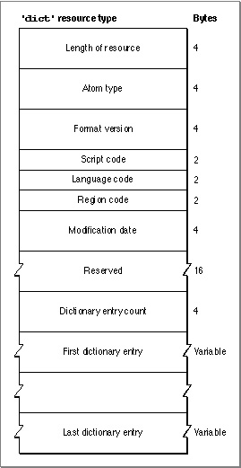
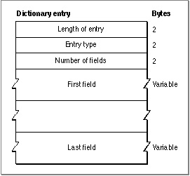
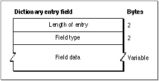

The Pronunciation Dictionary Resource
You can store a list of words and their associated pronunciations in a resource of resource type'dict'. You can associate any number of dictionary resources with a speech channel. Before using its internal rules to pronounce a word, the Speech Manager searches the dictionary resources that your application has associated with the speech channel in a last-in, first-searched order.Figure 4-5 shows the format of a pronunciation dictionary resource.
- Note
- Because your application is responsible for loading data from a pronunciation dictionary into memory, you can, if desired, store pronunciation information in the data fork of a file rather than in the resource fork. Also, you can devise your own format in which to store pronunciation data, as long as you convert that data into the format described in this section before calling the
UseDictionaryfunction.
Figure 4-5 Format of a pronunciation dictionary resource

To define a dictionary resource, you ordinarily use a resource of type
- Note
- Some synthesizers might use resources (such as resources of type
'ttsd') to store their internal pronunciation dictionaries. These internal dictionaries are not necessarily in the same format as the pronunciation dictionaries described here.'dict'. Such a resource contains a pronunciation dictionary resource header, which is at the start of the resource and defines characteristics of the dictionary as a whole, and any number of pronunciation dictionary entries. Each pronunciation dictionary entry corresponds to one word and contains one or more pronunciation dictionary entry fields. Each pronunciation dictionary entry field contains one piece of information about the word being described in the entry; for example, a dictionary entry would include a field with a textual representation of the word.The pronunciation dictionary resource header includes the following:
Immediately following the pronunciation dictionary resource header is a list of the pronunciation dictionary entries.
- Total byte length. The total number of bytes of the dictionary, including the entire pronunciation dictionary resource header in addition to the dictionary's entries.
- Atom type. The currently defined atom type is
'dict'. Future versions of the Speech Manager might define additional atom types for other types of dictionaries.- Format version. The currently defined format version is 1. Future versions of the Speech Manager might support additional format versions for the
'dict'atom type.- Script code. The script code of words defined in the pronunciation dictionary (for example,
smRoman). All words in a dictionary must be in the same script.- Language code. The language code of words defined in the pronunciation dictionary (for example,
langEnglish). All words in a dictionary must be in the same language.- Region code. The region code of pronunciations in the dictionary (for example,
verUS). All words in a dictionary must target the same region.- Date last modified. The number of seconds between midnight, January 1, 1904, and the modification time. You can use the
GetDateTimeprocedure to determine the number of seconds between midnight, January 1, 1904, and the current time. For more information, see Inside Macintosh: Operating System Utilities.- Reserved. These 16 bytes are reserved for future use. You should set them to 0.
- Entry count. The number of dictionary entries.
Figure 4-6 shows the format of a pronunciation dictionary entry.
Figure 4-6 Format of a dictionary entry in a dictionary resource

Each pronunciation dictionary entry consists of the following:
Immediately following the field count indicator are the fields themselves. Typically, a pronunciation entry always includes a field containing the word in textual format and a field containing the phonetic pronunciation of the word.
- Entry byte length. The total number of bytes in the entry, including this word.
- Entry type. A code for the type of pronunciation dictionary entry. The code $0000 represents a null entry, and codes $0001 through $0020 are reserved for future use by Apple Computer, Inc. You should thus ordinarily fill in this field with $0021, which is the code for a pronunciation entry, or $0022, which is the code for an abbreviation entry. In the current version of the Speech Manager, abbreviation entries work just like pronunciation entries.
- Field count. The number of pronunciation dictionary entry fields contained within this entry.
Each field within a dictionary entry has the format illustrated in Figure 4-7.
Figure 4-7 Format of a dictionary entry field

The three parts of a dictionary entry field are as follows:
- Field byte length. The total number of bytes in the pronunciation entry field, not including the pad byte of the field data when applicable.
- Field type. A code for the format of the pronunciation dictionary entry field's data. The code $0000 represents a null entry field, and Apple reserves codes $0001 through $0020 as well as code $0023 for future use. Code $0021 represents a textual representation of the word being described in the entry. Code $0022 represents a phonetic pronunciation of the word, including a complete set of syllable, lexical stress, word prominence, and prosodic marks, all represented in textual format.
- Field data. If the field type is $0021 or $0022, then this field contains characters representing the word textually or phonetically, respectively. The characters are not preceded by a length byte and are not followed by a null character. However, if there are an odd number of characters, then a byte must be added as padding to ensure that fields align on word boundaries. The pad byte need not be set to a particular value.